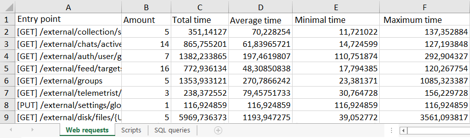

On the Performance Report page, users who are part of the Administrators group can generate a report containing diagnostic data on the system’s operation.
начало внимание
Performance reports are available only in the BRIX On-Premises edition.
конец внимание
The report is an .xlsx file that is downloaded to the computer. It records data on the execution time of external and internal web requests and server script requests. For BRIX On-Premises, statistics on SQL queries are also available.
You can manually generate a report based on the data collected up to the current moment. Additionally, you can set up automatic report generation at specified intervals. In this case, the generated reports can be downloaded from the Performance Report page.
For the BRIX On-Premises Enterprise edition, you can configure the export of metrics tracking the execution time of web and SQL queries, as well as server scripts, to the Prometheus storage. This allows you to visualize diagnostic data using Grafana. Read more about it in the Export BRIX Enterprise performance metrics into Prometheus storage article.
Configure report generation
To enable manual and automatic report generation:
- Navigate to the Administration > Developer Tools workspace.
- If you want to monitor widget performance in the report, enable the collection of this data in the system. To do that, in the Widget Debugging > Sources for information about widget performance section, select users, user groups, or org chart items.
Data for all widgets in the system that the specified employees worked with will be recorded and saved in the report. You can select a specific employee who has encountered a problem with the widget display or a user group that analyzes performance. The more users are specified in the field, the more extensive the collected statistics of performance data will be.
- In the Tools section, click Performance report.
- On opened page, click the Settings button and set the data collection parameters:
- Status. Enable this option to start collecting data for reports. After this, the following options will become available:
- Manual report generation. Performance data collected up to date.
- Automatic report generation within a time period.
- Periodic reports. Set parameters to enable automatic report generation:
- Status. Enable this option for the reports to be automatically generated at a specified frequency. You will be able to choose a report for a specific period and download it to your computer.
- Interval. Select the report creation frequency: Once every 30 minutes or Once an hour.
- Click the Save button.
Generate a report automatically
If periodic reports generation is enabled in the settings, they are automatically generated at the specified frequency and saved in the system.
The records are displayed in the Administration > Developer Tools workspace on the Performance Report page with the Automatic generation method.
To view the report data, download it to your computer.
Generate a report manually
You can download current system performance data. The amount of data downloaded depends on the report generation settings:
- If periodic report creation is enabled, the report will display data obtained since the last periodic report was created.
- If periodic report creation is disabled, the report will show all the information recorded since the data collection was enabled in the performance report settings.
To generate a report, open the Administration > Developer Tools workspace and go to the Performance Report page, then click on the Generate Report button.
In the opened window, you can download the report to your computer by clicking on the file name.
In addition, the report entry is saved in the general list on the Performance report page with the When requested generation method. You can download the generated report again.
Download an automatically generated report
To get a report file generated automatically or manually, open the Administration > Developer Tools workspace and go to the Performance Report page. Select the entry for the required period from the list and click the button.
When you disable performance data collection in the Performance Report settings, it becomes impossible to generate new reports. Previously generated reports are displayed on the page and are available for download.
How to read the report
Open the downloaded report file. You can see how many times a method was called or a widget was opened, as well as the execution time of requests and functions in milliseconds. Information in the file is distributed across the following tabs:

- Web requests. Data about requests generated by users through scripts or the system’s web interface.
- Scripts. Information about triggered server scripts. For them, you can see both the net execution time and the duration including waiting time in the queue.
- SQL queries. Statistics about queries received in the database with the name of the service where they were processed.
- Widgets. Summary statistics of widgets usage in the system by employees selected on the Developer Tools page. Here you can see the widget path, frequency of its use, as well as the time of widget loading, initialization function execution, and scripts preparation. Having analyzed the statistics, you can go to the interface designer and optimize the performance of problematic widgets.
Delete a report
You can delete automatically generated reports from the system to free up disk space. To do this:
- In the Administration workspace, go to the Developer Tools > Performance Report page.
- Select the reports to be deleted.
If you need to choose all visible entries on the page, check the box in the top row of the list. To delete all generated reports, click Select all.

- Click the Delete button and confirm the action.
The selected reports will be removed from the system.
Found a typo? Select it and press Ctrl+Enter to send us feedback